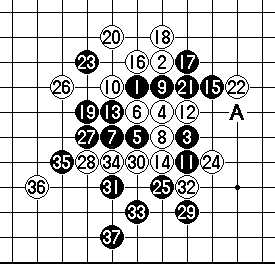
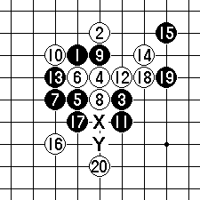
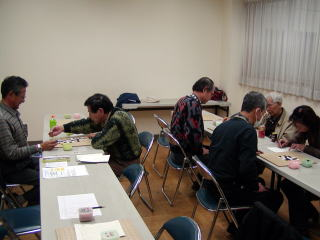

2009年的流星战，一共有喜爱连珠运动的选手7人参加。

|
\ ６ |
みき |
| 白 ９ | 高山明 |
\37后 白投了
白10后其实可以抓黑棋的三三禁手，白14直接走17就必胜了，实战白18如果下Ａ位，黑就被抓三三禁了，可见高山对抓禁取胜还不熟悉。此后白20、24都有机会抓黑棋禁手，但是都放弃了。黑25解禁成功，并奠定胜势。实战黑25如走26也是必胜。
白26走30强防，黑27依然如实战下法，黑必胜。
【参考图】
以下是参考图。
白14后，左图的20手是有趣的一手，白必胜！
Ｘ和Ｙ是2个三三禁手点，黑棋无法逃脱被抓禁的命运。
这就是注明的“二重三々禁”，由此决定了白必胜！
二重禁手在实战中不多见，但这种战术很重要，见到这样的机会一定要珍视不能放弃。


さて…バトルの方は…落としあり…
拾い伽沥り…7回の四追い伽沥り…
4伽颏げた上久保二段・山本五段・
丸山六段の3名が伽蚍证焙悉Δ长
になりました。
以下、崎4・m津五一五段、高山
9・みき6でした。
转自中华连珠
［此帖子已被 茗弈宽容 在 2010-2-9 16:01:21 编辑过］